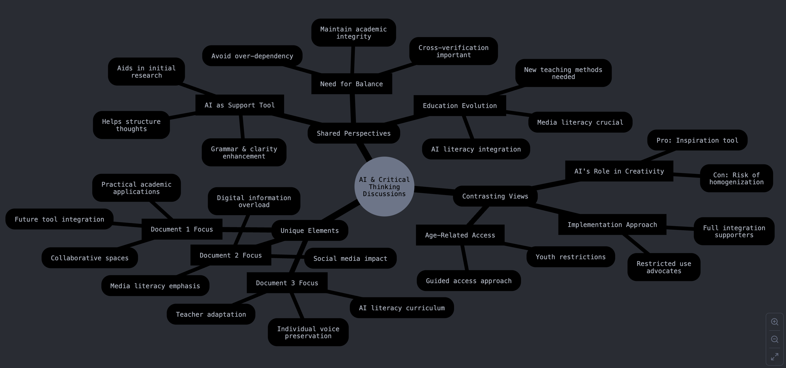

Welcome#
Welcome to the Future of Education Resource Hub!
Thank you very much for participating in the Future of Education event! This space has been designed to help you reflect on the rich discussions and insights shared during the event. Our aim is to provide a suite of educational resources that cater to different learning preferences, fostering deeper understanding and engagement with the topics explored.
Goals#
This resource hub is intended to:
Enhance your learning and reflection on the event’s discussions.
Provide timely resources in various formats that suit diverse learning preferences.
Serve as a collaborative space where educational insights can continue to grow.
Summary of Discussion Analysis from Audience (Claude)#

Common Threads across all documents:
Recognition of AI as a supportive tool rather than a replacement for human thinking
Emphasis on maintaining balance in AI usage
Agreement on the need for educational evolution to accommodate new technologies
Main Differences:
Approach to Implementation:
Document 1 is more optimistic, focusing on integration and future possibilities
Document 2 emphasizes caution and restriction, particularly regarding youth access
Document 3 takes a middle ground, focusing on guided usage and teacher adaptation
Primary Concerns:
Document 1: Academic integrity and proper tool utilization
Document 2: Media literacy and information overload
Document 3: Balance between AI assistance and personal development
Solutions Proposed:
Document 1 suggests integrated platforms and collaborative spaces
Document 2 advocates for restrictions and media literacy programs
Document 3 recommends balanced approaches and teacher training
Interactive Version of the Summary of Discussion Analysis from Audience is Available Here
About Us#
This initiative is brought to you by a team committed to making education accessible and engaging for everyone:
We hope these resources support your continued learning journey and inspire new ways of thinking about the future of education. Thank you for being a part of this transformative event!